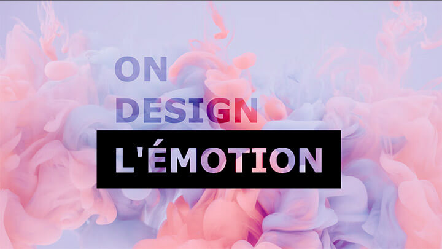

Pour cet exercice vous devez ajuster une affiche à l’aide des modes de fusion en CSS afin de lui donner l’apparence recherchée.
Aperçu du résultat 👇
CRÉDIT PHOTO
Pawel Czerwinski, UnsplashCouleurs 🎨
Modes de fusion
multiply, screen, overlay, etc.